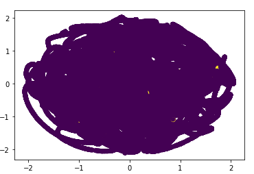
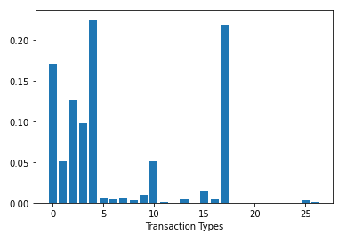

In our research we reviewed approximately 24 million transactions spanning over a few years. We looked as such details a the time of the transaction, the transaction type, and the location of the transaction. A tensorflow analysis shows that our findings are 99% accurate when compared to the overall dataset, with a sample of 1 million transactions.
A T-SNE review of the transactions, plotted below, shows that although the percentage of the transactions which were fraudulent is low, it is still statistically significant.
The bar graph data shown below shows that the most significant aspects to be aware of in analysis are whether or not the transaction was performed online, with the most common catch being a bad zipcode entered in validating the card, and the type of merchant where the transaction occured, with department stores and wharehouse stores being the most common targets of on location fraudulent transactions.
 